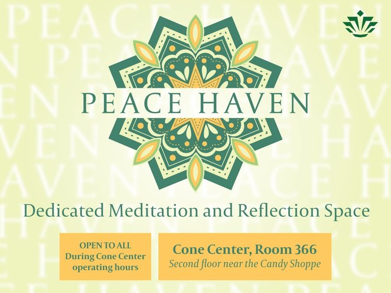

Daily Prayer Room (Cone 366)

The mission of the UNCC MSA is to provide an environment that empowers
all Muslim students in UNC Charlotte spiritually, academically, socially,
and professionally by building a bridge between the Muslim community at
UNCC and the MSA. ⛏
We will achieve this by, increasing Islamic awareness
in the society at large, providing spiritual events, educational
opportunities, and social and fun programs that make the students'
experiences at UNCC beyond successful.
- UNCC MSA Board